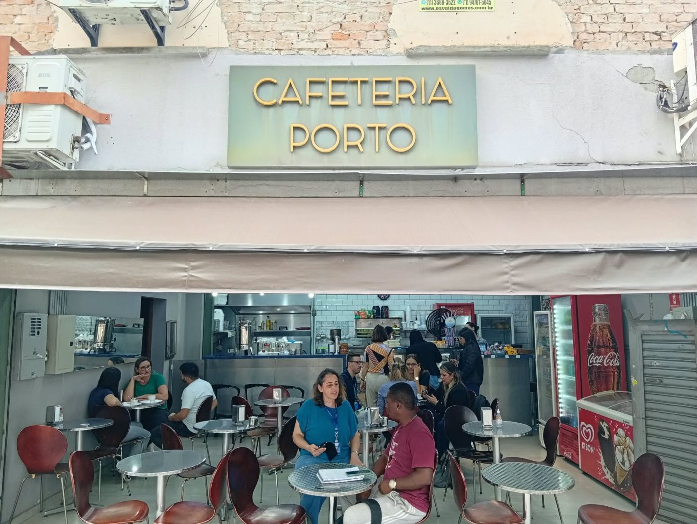
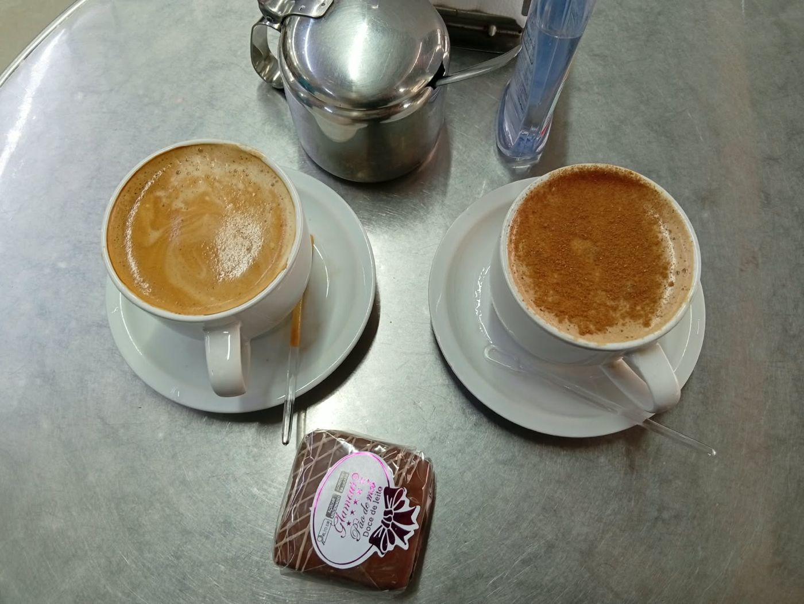
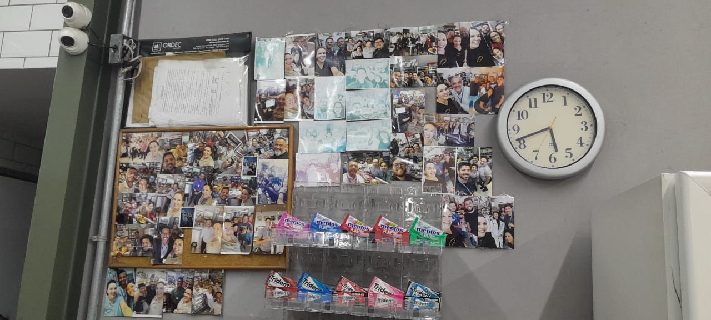
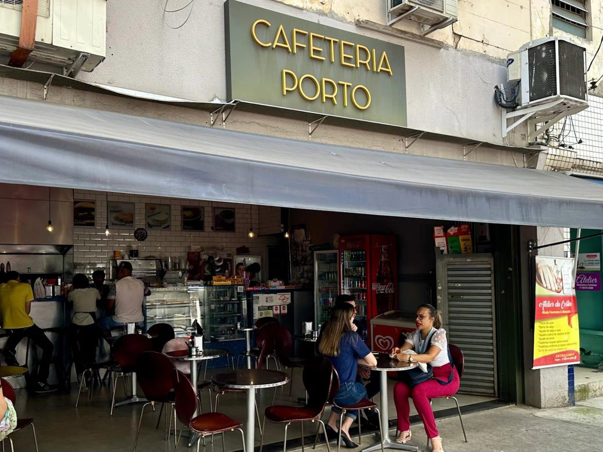

Café coado
Feito na hora, para despertar sem pressa e sem espera.
PedirPeça pelo WhatsApp antes de sair da mesa e retire sem fila. Café coado, cappuccino e lanches rápidos no coração de São Paulo.
Faça seu pedido pelo WhatsApp Alameda Ribeiro da Silva, 284Campos Elísios, São Paulo, SP

Do primeiro café ao lanche entre reuniões. Escolha, peça e retire.
Atendimento rápido para quem tem poucos minutos entre uma reunião e outra.
Peça no caminho pelo WhatsApp e retire sem enfrentar fila.
Um refúgio acolhedor para respirar, tomar um bom café e voltar com energia.
“Servem lanches rápidos! Pra quem está com pressa lá é perfeito. Adoro o pão de queijo tostado e o cappuccino!”
“Top demais, peçam pão de queijo saída requeijão e me agradeçam depois.”

